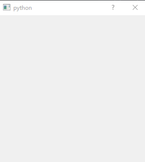

PySide の RubberBand(選択範囲表示)の使い方
# -*- coding: utf-8 -*-
import sys
from PySide import QtCore, QtGui
class RubberBandTest(QtGui.QDialog):
rubber_band = None
def __init__(self, parent=None):
super(RubberBandTest, self).__init__(parent)
self.resize(300, 300)
def mousePressEvent(self, e):
self.origin = e.pos()
if not self.rubber_band:
self.rubber_band = QtGui.QRubberBand(QtGui.QRubberBand.Rectangle, self)
self.rubber_band.setGeometry(QtCore.QRect(self.origin, e.pos()).normalized())
self.rubber_band.show()
def mouseMoveEvent(self, e):
self.rubber_band.setGeometry(QtCore.QRect(self.origin, e.pos()).normalized())
def mouseReleaseEvent(self, e):
self.rubber_band.hide()
self.rubber_band = None
if __name__ == '__main__':
app = QtGui.QApplication(sys.argv)
a = RubberBandTest()
a.show()
sys.exit(app.exec_())

選択範囲をわかりやすく表示できるのが、RubberBand。
このような動作は、paintEvent などでも作成できるが、RubberBand を使用した方が圧倒的に楽に
作成することができる。